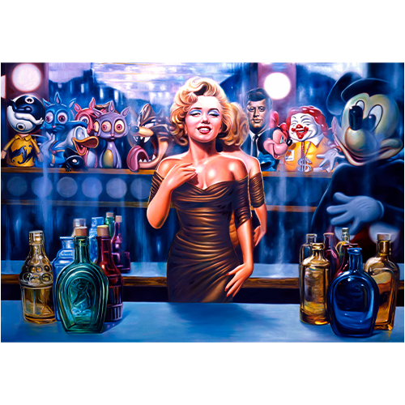
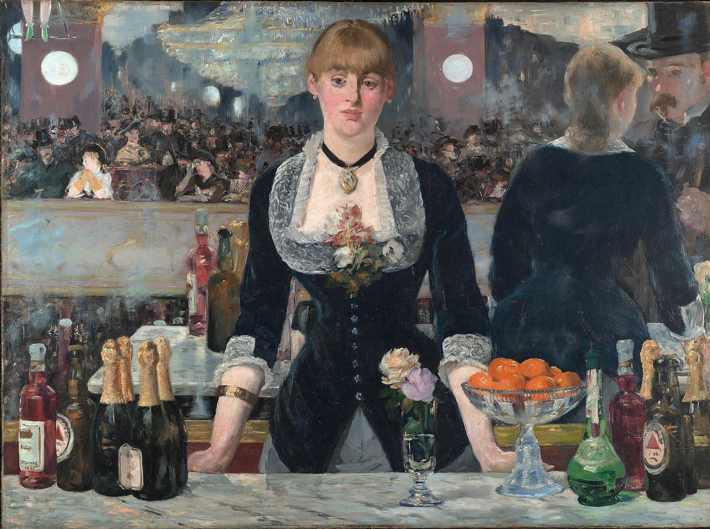
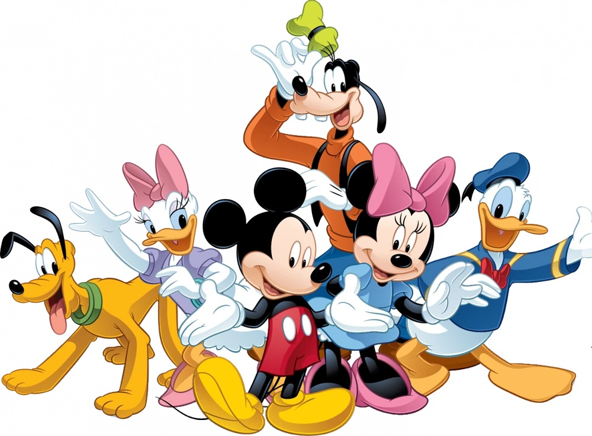

Notes
In Original Grin, this work was erroneously reported as 42 × 56 inches.
This work references Édouard Manet’s A Bar at the Folies-Bergère.
This work references Marilyn Monroe and John F. Kennedy.
This work references Ronald McDonald, several Disney characters, the Peanuts character Charlie Brown, and the Tasmanian Devil cartoon character.
Ancillary Documentation
The following materials document the visual/art-historical, celebrity, mascot, and cartoon-character source references associated with this work.



